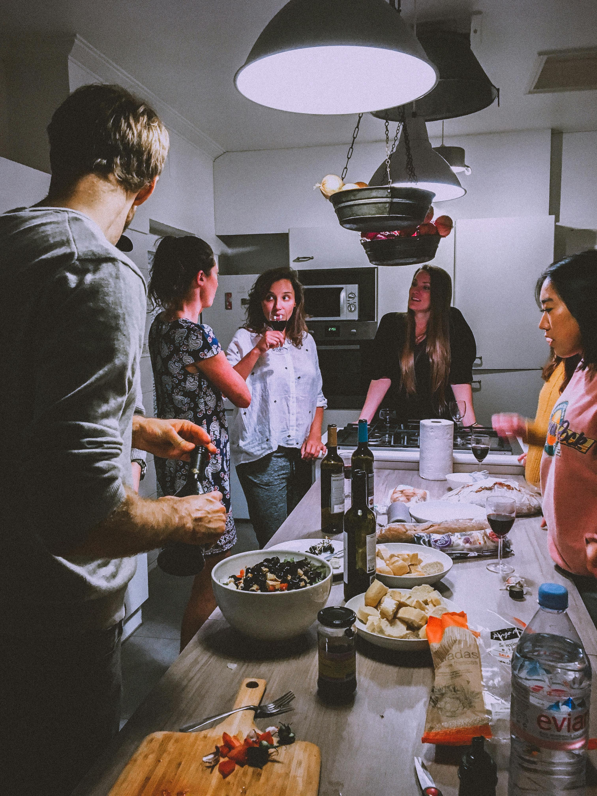

Nutrition and Diet

Nutrition and diet are crucial components of overall health and well-being. Nutrition refers to the process of acquiring and utilizing nutrients from food for growth, development, and maintenance of bodily functions. A balanced diet provides essential nutrients such as carbohydrates, proteins, fats, vitamins, and minerals in appropriate proportions to support optimal health.
A healthy diet is one that includes a variety of foods from all food groups, emphasizing fruits, vegetables, whole grains, lean proteins, and healthy fats while limiting processed foods, sugary beverages, and excessive amounts of sodium, saturated fats, and added sugars.
The benefits of a nutritious diet extend beyond physical health, influencing mental and emotional well-being as well. Good nutrition supports cognitive function, mood regulation, and can help prevent chronic diseases such as obesity, heart disease, diabetes, and certain cancers.
Individual nutritional needs vary based on factors such as age, gender, activity level, and underlying health conditions.
Physical Activity

Physical activity is any bodily movement produced by skeletal muscles that requires energy expenditure. It encompasses a wide range of activities, from daily tasks like walking and climbing stairs to more structured exercises such as running, swimming, and weightlifting. The importance of physical activity cannot be overstated, as it contributes significantly to overall health and well-being.
Regular physical activity has numerous benefits for both the body and mind. It is essential for maintaining a healthy weight, as it helps to burn calories and build muscle mass. It also plays a crucial role in reducing the risk of chronic diseases such as heart disease, type 2 diabetes, and certain cancers. Additionally, physical activity can improve cardiovascular health by strengthening the heart and improving circulation.
Beyond its physical benefits, regular exercise has profound effects on mental health and cognitive function. Engaging in physical activity releases endorphins, which are chemicals in the brain that act as natural painkillers and mood elevators.
Mental Health and Relaxation

Mental health is a multifaceted aspect of overall well-being that encompasses emotional, psychological, and social dimensions. It influences how individuals think, feel, and act, shaping their perceptions, relationships, and responses to life's challenges. Just as physical health is crucial, so is mental health, as it profoundly impacts every aspect of daily life.
In the modern world, where stressors abound and the pace of life can be relentless, finding ways to prioritize mental health and incorporate relaxation practices into daily routines is paramount. Relaxation is the antidote to stress, offering a reprieve from the demands of everyday life and allowing individuals to recharge and rejuvenate their minds and bodies.
There are numerous techniques and activities that promote relaxation and support mental health. Mindfulness meditation, for instance, involves paying attention to the present moment without judgment, helping to reduce stress and anxiety while fostering a sense of inner calm and clarity.
Social Connections

Social connections are fundamental to human well-being, shaping our sense of identity, belonging, and purpose. They encompass the relationships we cultivate with family, friends, colleagues, and communities, providing opportunities for support, companionship, and shared experiences.
Research consistently demonstrates the profound impact of social connections on mental, emotional, and physical health. Strong social ties are associated with lower rates of depression, anxiety, and stress, as well as greater resilience in the face of adversity. Meaningful relationships offer a sense of validation, acceptance, and understanding, bolstering self-esteem and fostering a positive outlook on life.
Moreover, social connections contribute to physical well-being by promoting healthy behaviors and lifestyle choices. Engaging in activities with others, such as exercising, dining together, or pursuing hobbies, not only enhances enjoyment but also encourages accountability and motivation.
Sleep and Rest

Sleep and rest are essential components of overall health and well-being, playing critical roles in physical, mental, and emotional functioning. Sleep is a naturally recurring state characterized by reduced consciousness, decreased sensory activity, and altered brainwave patterns. It is a vital process that allows the body to repair, regenerate, and consolidate memories.
Quality sleep is crucial for numerous physiological functions, including immune system regulation, hormone balance, and cellular repair. Adequate rest supports cognitive processes such as learning, memory consolidation, and decision-making. Furthermore, sleep plays a significant role in emotional regulation, with insufficient sleep linked to mood disturbances, irritability, and heightened stress responses.
Establishing healthy sleep habits, also known as sleep hygiene, is essential for optimizing sleep quality and duration. This includes maintaining a consistent sleep schedule, creating a relaxing bedtime routine, and cultivating a comfortable sleep environment free from distractions and disruptions.
Outdoor Activities

Outdoor activities encompass a diverse array of recreational pursuits that take place in natural environments, offering individuals opportunities for physical exercise, mental relaxation, and connection with nature. From hiking through scenic trails and camping under the stars to cycling along picturesque routes and exploring waterways through kayaking or canoeing, outdoor activities cater to a wide range of interests and skill levels. Whether it's fishing in a serene lake, rock climbing on rugged cliffs, or simply enjoying a leisurely picnic in a park, outdoor activities provide countless benefits for overall well-being. Engaging in these pursuits fosters physical fitness, reduces stress, promotes mental clarity, and cultivates a deeper appreciation for the natural world.
Whether pursued solo, with friends, or as part of organized group outings, outdoor activities offer opportunities for adventure, exploration, and rejuvenation amidst the beauty of the great outdoors.
Professional Support

Professional support refers to the assistance, guidance, and expertise provided by trained professionals in various fields to help individuals address specific challenges, achieve goals, or navigate complex situations. This support can encompass a wide range of disciplines, including mental health counseling, therapy, coaching, financial planning, legal advice, career counseling, and more.
In the realm of mental health, professional support may involve therapy sessions with psychologists, psychiatrists, or licensed counselors to address issues such as anxiety, depression, trauma, or relationship problems. These professionals offer evidence-based interventions, strategies, and support to help individuals improve their mental well-being and cope with life's challenges.
In other areas, such as finance and legal matters, professional support may come from financial advisors, accountants, lawyers, or estate planners who provide expertise and guidance on managing finances, navigating legal issues, or planning for the future.
Nature and Environment

Nature and the environment encompass the intricate balance of ecosystems, natural resources, and living organisms that constitute our planet. From expansive forests and pristine oceans to vast deserts and towering mountains, the natural world is a source of awe-inspiring beauty and essential sustenance for all life forms.
The environment encompasses the air we breathe, the water we drink, the soil that supports plant life, and the climate that shapes our weather patterns. It includes the diverse array of species that inhabit Earth, from microscopic bacteria to majestic mammals, each playing a vital role in maintaining ecological balance.
Nature provides a multitude of benefits to humanity, including clean air and water, fertile soil for agriculture, and a rich diversity of plants and animals that sustain our food systems. It also offers opportunities for recreation, relaxation, and spiritual renewal, fostering a deep connection between humans and the natural world.